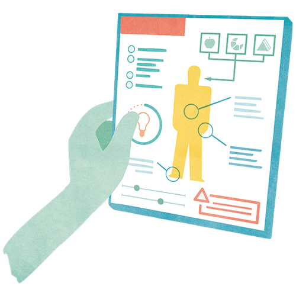

Mit der Academy erhaltet ihr im Business-Plan praxisnahe Lernmodule rund um Facilitation und wirksame Transformation.
Gemeinsam mit 9 Spaces zeigt Plan International Deutschland, wie wertebasiertes Arbeiten Orientierung gibt – nach innen wie nach außen.

Ein kleines Nutzer*innenhandbuch zu sich selbst zu schreiben, hilft bei der Selbsterkenntnis und dem Zusammenarbeiten mit anderen.
Je besser wir eine Person kennen, desto leichter ist es, eine starke Beziehung zu ihr aufzubauen. Unser Tool hilft dabei.
Ein Tool, das euch dabei hilft, die individuellen Stärken eurer Team-Mitglieder sichtbar zu machen.
Um gut mit anderen arbeiten zu können, ist es wichtig, sich immer besser selbst kennenzulernen.